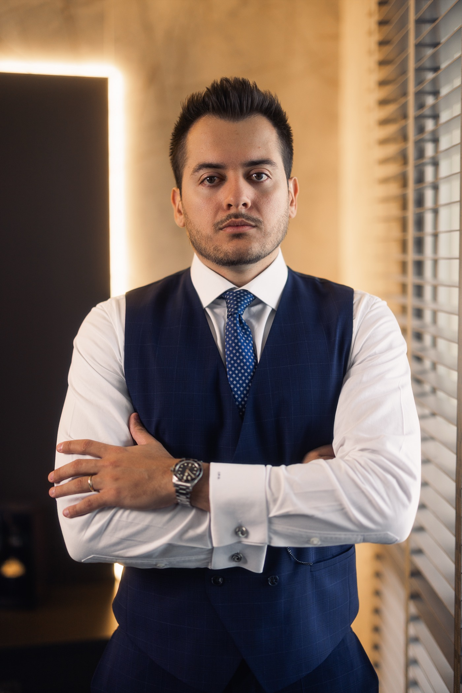

Advocacia Criminal
Defesa em todas as fases do processo penal.
Do inquérito e da prisão em flagrante às sustentações no Tribunal do Júri e aos Habeas Corpus nos Tribunais Superiores — com estratégia definida caso a caso.

Urgências criminais
As primeiras 24 horas decidem muito
Na prisão em flagrante, a audiência de custódia acontece em até 24 horas — é nela que se discute a liberdade. Atuamos desde a delegacia: orientação à família, acompanhamento da lavratura e defesa imediata na custódia.
O que fazer agora
- 01Não preste declarações sem a presença de um advogado.
- 02Reúna documentos e informações básicas sobre a ocorrência.
- 03Chame nosso plantão — orientamos os próximos passos na hora.
Frentes de atuação
Advocacia criminal completa
Direito Penal
Defesa em acusações de crimes financeiros, tráfico de entorpecentes, crimes sexuais, porte de arma, lesão corporal, crimes patrimoniais, receptação, estelionato e crimes contra a honra, entre outros.
Do flagrante até a liberdade
Acompanhamos todos os atos da prisão em flagrante e das investigações: defesas escritas e orais, audiências, sustentações e Habeas Corpus estratégicos nos Tribunais Superiores.
Tribunal do Júri
Defesa completa em crimes contra a vida — homicídio, infanticídio, aborto e instigação ou auxílio ao suicídio — conduzida por advogados experientes em plenário.
Erro judiciário
Em condenações definitivas injustas, com ou sem novas provas, atuamos com a Revisão Criminal para buscar a absolvição ou a redução da pena.
Defesa de vítimas
Atuação na defesa de vítimas de crimes, com destaque para violência doméstica, crimes sexuais, homicídios, ameaça e estelionato.
Empresas e compliance penal
Assessoria completa em compliance para matérias penais, incluindo crimes contra o sistema financeiro, e defesa de empresas vítimas de delitos como furto, apropriação indébita e estelionato.
Como atuamos
Do primeiro contato à decisão final
Atendimento imediato
Análise do caso no primeiro contato, com orientação clara sobre riscos e caminhos possíveis.
Estratégia de defesa
Estudo aprofundado dos autos e definição da tese, sem soluções de prateleira.
Todas as instâncias
Audiências, sustentações orais, recursos e Habeas Corpus, inclusive no STJ e no STF, em Brasília.
Acompanhamento constante
Cliente e família informados a cada movimentação do processo, em linguagem acessível.
Dúvidas frequentes
Perguntas frequentes
Advogado particular faz diferença em relação à defensoria?
A Defensoria Pública presta um serviço essencial, mas atende milhares de casos simultaneamente. A defesa particular permite dedicação integral ao caso, estratégia individualizada, acompanhamento constante da família e atuação rápida em cada prazo.
O que é a audiência de custódia?
É a audiência realizada em até 24 horas após a prisão em flagrante, na qual o juiz decide se a prisão será mantida, convertida em preventiva ou substituída pela liberdade. É o momento mais importante do início do caso.
Vocês atuam em processos já em andamento?
Sim. Assumimos casos em qualquer fase — inquérito, instrução, júri, recursos ou execução penal —, inclusive com Revisão Criminal de condenações definitivas.
Precisa de defesa criminal?
Plantão 24 horas, todos os dias. Sigilo absoluto desde a primeira conversa.